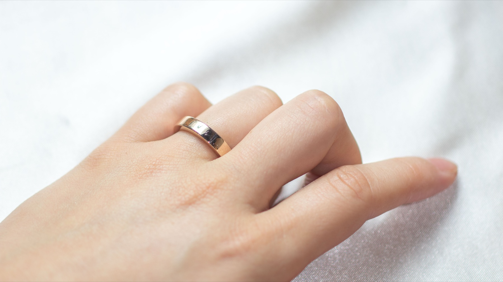
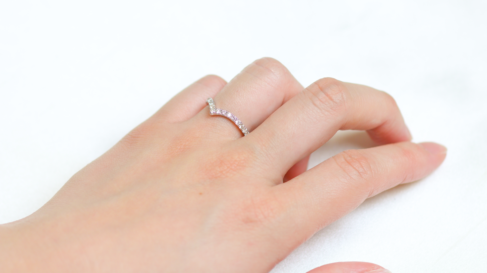

Every Rion piece begins with a single strand. What happens next is a process of precision, care, and irreversible permanence — performed entirely by skilled artisans in our Japanese atelier.

Rion is not a locket. The hair is not placed behind glass, nor stored in a compartment that can be opened.
At our atelier, a skilled artisan seals each strand directly into the setting — encased in precision resin, set within K18 gold or platinum, airtight and permanent. The hair becomes part of the jewel itself. It cannot be seen from the outside. It simply lives there, forever, close to the person who wears it.
From the moment your collection kit arrives in Japan to the moment your finished jewel is ready to ship.
Your sealed collection kit arrives at our Japanese atelier via DHL. Inside is the hair of your loved one or pet — carefully enclosed in the airtight envelope provided. Even a single strand under 1 cm is sufficient. We handle it from the moment it arrives with the same care we would give the jewel itself.
Your design is confirmed, materials are selected, and all specifications are finalised. The artisan who will make your piece reviews every detail of your order before any work begins. Nothing proceeds until we are certain the piece will be exactly as you envisioned.
The K18 gold or platinum piece is crafted by our skilled artisans. Every curve, proportion, and surface is shaped to your approved design — whether a ring, a pendant, or a fully bespoke creation. The piece must be complete and perfect before the hair is sealed inside.
The artisan places the hair into the finished jewel setting and hermetically seals it — a technique refined over years of iteration at our atelier. The seal is airtight, permanent, and designed to last for generations. Once sealed, the chamber cannot be opened without destroying the piece. This is intentional: the seal is a promise.
Before the final finish, we photograph the sealed jewel — before, during, and after the sealing — and send the complete record to you on WhatsApp. These images are yours to keep. Many of our customers tell us they treasure the sealing photographs as much as the jewel itself.
The jewel is polished to Rion's finishing standard, undergoes a final quality inspection, and is placed in the Rion exclusive case and packaging. Only then is it prepared for shipment. The entire process — from the moment your hair arrives in Japan — takes approximately five and a half months.

We believe you should see exactly how your precious hair was handled. Before your jewel ships, we send you a complete photographic record of the sealing process — captured at every key stage by the artisan who made your piece.
There is nothing to take on trust. You see the hair before it enters the jewel. You see it being sealed. You see the finished chamber. These photographs are yours, and they stay with you forever alongside the jewel itself.

Less than you think. We work with the smallest fragments — because we understand that what you hold is precious and finite.
1 cm · 1 strand. Less is fine too. If what you have is shorter or fewer, please contact us — we will always do what we can.
Same — approximately 1 cm · 1 strand. Fine, short, or delicate hair from any animal is accepted. We treat it with the same care as human hair.
Select designs can accept hair from two or more people — or a person and a pet together. Ask us when you enquire and we will guide you to the right design.
The sealing technique used at Rion has been refined through years of iteration. Once sealed, the hair is protected by an airtight barrier — designed to last for generations of daily wear without degradation.
The sealed chamber will not be affected by water, sweat, light, or time. You can wear the jewel every day of your life, and the hair inside will remain exactly as it was on the day it was sealed.
Please note: the seal should never be tampered with. Attempting to open the hair chamber will permanently damage the jewel and void all service guarantees. If you have any concerns about your piece, contact us on WhatsApp.
We are happy to answer anything — no question is too small. Message us on WhatsApp or browse our full FAQ.